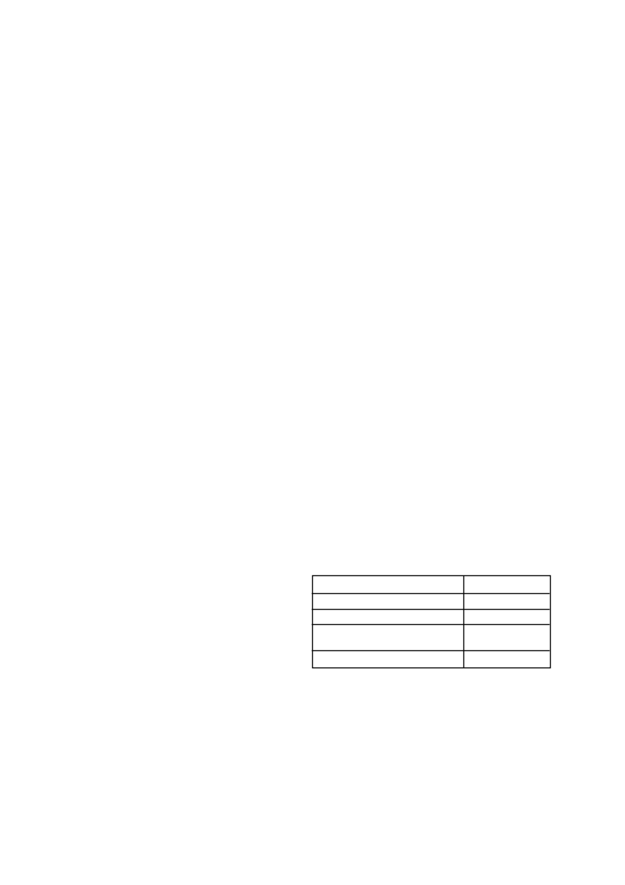

8.
Gewasbeskadiging mag voorkom onder uitermatige weer-
stoestande of wanneer die gewas onder stremmingstoe-
stande verkeer a.g.v. onvoldoende of abnormale hoë vog-
toestande of uitermatige temperature of uitermatige tempera-
tuur wisselings. Langdurige bewolkte toestande kan lei tot
tydelike gewas beskadiging.
9.
Indien ‘n aktiverings reën (10 - 20 mm) nie binne 7 - 14 dae
na die na-opkoms toediening van
HALEX GT
geval het nie
sal die nawerking van
HALEX GT
beperk word.
10. Verhoed die wegdrywing van
HALEX GT
na aangrensende
nie GT gewasse. Ernstige skade en ook vernietiging van
gewasse kan plaasvind indien
HALEX GT
in kontak kom met
enige plantmaterial insluitende blare, groen stamme, bloot-
gestelde wortels of vrugte van gewasse, bome en enige ander
plante of gewasse wat nie bespuit moes word nie.
11. Ernstige skade aan mielies kan verwag word indien
HALEX
GT
toegedien word
a)
na-opkoms in tenkmengsels met grasdoders wat emulsi-
fiseerde konsentrate (EC’s) is.
b)
na-opkoms van mielies wat tydens plant behandel is met
organofosfaat insekdoders soos terbufos of chlorpirifos
(sien 11a & b hieronder)
c)
na-opkoms in tenkmengsels met organofosfate of kar-
bamaat insekdoders
12. Moenie
HALEX GT
toedien
a)
binne 28 dae na ‘n grondtoediening van ‘n organofosfaat
(bv. terbufos) of ‘n karbamaat (bv. aldicarb) tydens plant-
tyd
b)
in ‘n tenkmengsels met organofosfate (bv. chlorpirifos) of
karbamaat (bv. methomil) insekdodders vir blaartoedie-
nings nie.
c)
binne 7 dae voor of 7 dae na die toediening van organo-
fosfate (bv. chlorpirifos) of karbamaat (bv. methomil)
insekdodders vir blaartoedienings nie.
13. Moenie die grond bewerk binne 7 dae voor of na die ‘n
HALEX GT
bespuiting nie aangesien die onkruidbeheer van
HALEX GT
benadeel mag word.
14. Moenie
HALEX GT
toedien in tenkmengsels met suspensie
kunsmismiddels of ureum ammonium nitraat (UAN) as basis
nie.
15. Om kontaminasie te verhoed moet die spuittoestel met
skoon water en ‘n kommersiële tenk skoonmaakmiddel
gewas word voor en na elke bespuiting van
HALEX GT.
4.2
Opvolggewasse:
1.
Indien die gewas vernietig is nadat ‘n
HALEX GT
toediening
gedoen is volg die riglyne soos hieronder.
2.
Indien
Halex GT
in kombinasie met ander onkruiddoders
toegedien word moet die wisselbou instruksies wat die mees
beperkendste is gevolg word.
3.
Die volgende wagperiodes moet nagekom word:
Koring en gars
1 maand
Graansorghum
2 maande
Aartappels
6 maande
Sojabone, droëbone, grondbone,
9 maande
sonneblom en katoen
Alle ander gewasse
24 maande
4.
Alle wisselbougewasse moet slegs na ‘n deeglike grondbe-
werking geplant word. Aangesien die produk gemetaboliseer
word deur mikrobiese aktiwiteit, mag periodes van lae mikro-
biale aktiwiteit die residuele werking van
HALEX GT
verleng.
Kontak u plaaslike SYNGENTA verteenwoordiger voordat
op enige bekalkings program besluit word om gewas
keuses en gewas beskermings programme te bespreek.
4.3 Sproeinewel wegdrywing
1.
Verhoed wegdrywing te alle tye na aangrensende gewasse en
veral na aangrensende gewase wat nie glifosaat weerstand-
biedend is nie.
2.
Die interaksie tussen toedieningsapparaat en omgewings
faktore bepaal die potensiaal vir wegdrywing. Die toediener is
verantwoordelik om al hierdie faktore in ag te neem wanneer
besluit word om ‘n toediening te maak.
HALEX GT
/ 2
dat weerstandbiedende populasies sal ontwikkel. Geintegreerde
onkruidbeheer stelsels dra dus by tot die bestuur van weerstand-
biedende onkruid populasies. Glifosaat is een van die aktiewe
bestanddele van
HALEX GT
en daarom is die bestuur van glifo-
saat weerstand krities.
HALEX GT
sal breëblaar onkruide wat natuurlike toleransie asook
moontlike weerstand teen glifosaat het beheer.
HALEX GT
sal nie grasse wat glifosaat weerstand vertoon
genoegsaam beheer nie.
Vir die beheer van glifosaat weerstandbiedende grasse moet ‘n
onkruiddoderprogram gevolg word wat vooropkoms onkruid-
doders insluit soos DUAL GOLD (L5749), GARDOMIL GOLD
(L6246), GESAPRIM SUPER (L3914), PRIMAGRAM GOLD
(L7308), CALLISTO (L6795), CAMIX (L8089), LEXAR (L8326) en
CAMIX PLUS (L8327) om die glifosaat afhanklikheid te verminder.
Die beste onkruidbeheer bestuur stelsel sluit die afwisseling van
glifosaat onkruidbeheer programme met onkruidbeheer pro-
gramme wat produkte bevat wat alternatiewe wyse van werkings
het asook verskillende bewerkings praktyke insluit.
1.
In glifosaat verdraagsame mielies (GT) mag nie meer as 2
toedienings van ‘n glifosaat bevattendende onkruiddoders in
een seisoen gespuit word nie. Alterneer met produkte met
verskillende werkingswyses en/of bewerkingspraktyke.
2.
Gebruik alternatiewe (nie-glifosaat bevattende produkte) vir
saadbed voorbereiding en residuele onkruiddoders in GT
gewasse soos mielies en sojabone indien meer as een glifo-
saat bevattende onkruiddoder gebruik moet word.
3.
Om GT mielie en GT sojaboon opslag te beheer moet GT
gewasse en konvensionele gewasse met mekaar alterneer
word.
4.
Gebruik altyd die geregistreerde vol dosisse. Strewe na 100%
beheer om weerstand te voorkom.
5.
Monitor lande wat gespuit is vir enige verlies aan effektiwiteit.
6.
Kontak die naaste voorligtingsbeampte, gewasadviseur
of die Syngenta verteenwoordiger vir onkruiddoder weer-
standsbestuur maatreëls asook geïntegreerde onkruidbeheer
be stuur startegie aanbevelings.
Aangesien die grootte en omvang van hierdie weerstandbiedende
populasies moeilik is om te bepaal, is dit noodsaaklik, dat lande
jaarliks ondersoek moet word om moontlike weerstand vroeg
te identifiseer. Indien bostaande noodmaatreëls nie nougeset
nagekom word nie kan
SYNGENTA
nie verantwoordelik gehou
word as
HALEX GT
nie weerstandbiedende onkruide beheer nie.
Vir spesifieke inligting oor weerstandsbestuur kontak die
registrasiehouer van hierdie produk.
4. GEBRUIKSBEPERKINGS:
4.1 Algemeen:
1.
Moet nie
HALEX GT
toedien op ingeteelde ouerplante van
moederlyne of nuutvrygestelde mieliekultivars sonder om eers
u verskaffer of saadfirma vooraf te raadpleeg nie.
2.
HALEX GT
kan slegs na-opkoms op alle glifosaat
ver-
draagsame
mielies (bv. Roundup Ready
®
en Agrisure
®
GT)
gespuit word.
3.
‘n Toediening van
HALEX GT
op ‘n mielie wat nie glifosaat
weerstandbiedend is nie sal die gewas laat afsterf.
4.
Moet nie
HALEX GT
deur enige besproeiingstelsel toedien
nie.
5. Moenie
HALEX GT
met lugbespuiting toedien nie.
6.
Grondversteuring na beide voor- en /of na-opkomsbehande-
lings kan lei tot die ontkieming van nuwe onkruide wat swak
beheer tot gevolg sal hê.
7.
Wanneer onkruide onder stremmingstoestande verkeer a.g.v.
droogte, hitte, gebrek aan vrugbaarheid, vloede of lang koue
temperature, kan die beheer verminder of vertraag word
aangesien die onkruide nie aktief groei nie. Ontsnapping van
onkruide mag voorkom wanneer toediening gemaak word
onder lang stremmingstoestande. Optimale onkruidbeheer sal
verkry word indien toediening van
HALEX GT
uitgestel word
totdat die stremmingstoestande verby is en die onkruide weer
aktief groei. Maak seker dat die teikenonkruide nog binne die
voorgestelde groeistadiums is soos aangedui.
